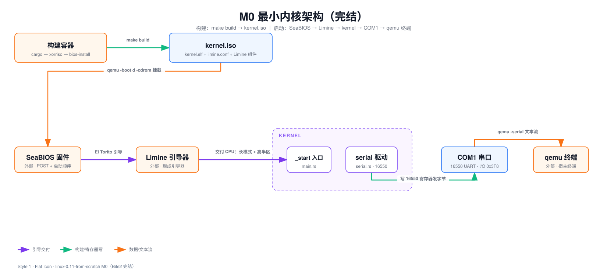

M0 Bite2 · 能启动的内核
limine.conf + xorriso 打双引导 ISO，qemu 从光驱启动，串口断言 M0: kernel alive
Lead: 把 Bite 1 编出的内核 ELF 装进一张可引导 ISO。qemu 从光驱启动它，串口日志打出 M0: kernel alive。make -C impl check 每次构建都自动跑这条断言。
问题
Bite 1 编出的 ELF 只是硬盘上的一个文件，CPU 从没执行过它。 它和一张图片没有区别：躺在那里，没有人跑。
从「文件」到「CPU 真的执行它」，中间隔着四个环节。
- 加电后第一条指令是谁的？不是我们的。CPU 复位后从写死的地址开跑，那里住着固件。
- 固件怎么找到我们的内核？靠一张启动顺序表和一张引导登记表。
- 谁把盘上的文件变成内存里的指令？读盘、解析 ELF、按链接地址摆放，这个「人」叫引导器。
- 怎么向 qemu 证明内核真跑起来了？要一条能写进 Makefile 的断言，不是一张截图。
Bite 1 已经通了编译链路：Rust 工具链 → 链接脚本 → ELF。本 Bite 要通的是运行链路：ISO → qemu → 串口输出。两条链合起来，就是每次改完代码的最小开发循环。
本 Bite 验收标准：qemu 从光盘启动内核，串口日志出现 M0: kernel alive。
背景卡片：加电到光盘引导
一句话：CPU 加电后跑固件，固件照启动顺序表找一个「看起来能引导」的设备，读出引导代码交给它；光盘靠 El Torito 登记表指路。
BIOS 加电自检与启动顺序。 x86 PC 加电后，CPU 从靠近 4GB 顶端的复位向量开始执行，那里映射着主板固件。qemu 里扮演这个角色的是 SeaBIOS。固件先做 POST，也就是加电自检：数内存、初始化芯片组。然后它轮询启动顺序表里的设备：软盘、硬盘、光驱。第一个「看起来能引导」者获胜。
「看起来能引导」对硬盘是第 0 扇区末尾的 55 AA 签名，对光盘则是下面这张登记表。轮询顺序就是本 Bite 头号坑的原理层：qemu 命令行同时挂着硬盘和光盘时默认硬盘优先，修法是 -boot d 把光驱排到第一（Makefile:10-11）。
El Torito 光盘启动规范。 光盘的扇区是 2048 字节，没有「第 0 扇区放引导代码」的硬盘惯例，BIOS 怎么知道从哪读？El Torito 是一份光盘启动规范（名字来自 IBM 和 Phoenix 两位工程师常去的一家墨西哥餐厅）。它在 ISO 里放一张登记表：
- Boot Record：告诉 BIOS「这张盘可引导，引导目录在第 N 扇区」。
- Boot Catalog（引导目录）：列出本盘支持哪些平台的引导，每项指向一个引导镜像在盘上的位置。
- 引导镜像：真正被执行的代码。BIOS 按登记的长度把它读进内存，跳过去。
引导镜像有三种模式：模拟软盘、模拟硬盘、no-emulation。前两种让 BIOS 假装光盘是张软盘或小硬盘。no-emulation 不假装，BIOS 原样读入镜像前几扇区就跳转，代码自己用 BIOS 光盘服务读剩余部分。现代引导器清一色用 no-emulation，所以命令行里写的是 -no-emul-boot（impl/docker/build.mk:38）。
空说无凭，dump 我们这张 impl/build/kernel.iso 的登记表（容器里跑，-report_el_torito plain 是 xorriso 自带的「读出并打印登记表」功能）：
$ docker exec linux011-rust-build xorriso -indev /work/build/kernel.iso -report_el_torito plainEl Torito catalog : 1476 1El Torito cat path : /boot.catalogEl Torito images : N Pltf B Emul Ld_seg Hdpt Ldsiz LBAEl Torito boot img : 1 BIOS y none 0x0000 0x00 4 1477El Torito boot img : 2 UEFI y none 0x0000 0x00 5760 35El Torito img path : 1 /boot/limine/limine-bios-cd.binEl Torito img opts : 1 boot-info-tableEl Torito img path : 2 /boot/limine/limine-uefi-cd.bin逐列对账：catalog 在 1476 扇区，登记了两个引导镜像。第 1 项平台 BIOS、模式 none、预载长度 Ldsiz 4，指向 /boot/limine/limine-bios-cd.bin。第 2 项平台 UEFI，指向 limine-uefi-cd.bin。一张盘同时伺候两种固件。逐列完整解读见「细节展开」。
ISO 9660 与 xorriso。 ISO 9660 是光盘文件系统标准，.iso 文件的 iso 就是它：一张只读的目录树，光驱、U 盘、虚拟机通用。xorriso 是制作这种镜像的命令行工具，我们只用它的 mkisofs 兼容模式（-as mkisofs）。它吃进一个目录，吐出一张带引导信息的 .iso。
从加电到 _start 的全程慢放另有一篇概念文档：从加电到 _start：一次开机到底发生了什么。卡片看不懂就先去读那篇。
设计
内核架构零变动，变的是启动链路和构建流水线。 下面是 M0 完结时的全貌。

第一张图是加电到 _start 的时序，注意每一棒的交接物：
第二张图是构建流水线，看清哪一半在宿主机、哪一半在容器：
决策卡片 1：光盘 ISO 还是软盘镜像
- 决策点：内核以什么形式交给 BIOS。
- 备选：(a) El Torito 光盘 ISO；(b) 原版那样的软盘扇区镜像。
- 选择理由：选 (a)。ISO 自带文件系统，内核是个有名字的文件，引导器按路径读它；改完内核重打一张盘即可。
- 放弃的成本：(b) 能沿用原版 bootsect 自举的思路，和 0.11 源码逐行对照；选 (a) 后这条对照链断了，只能在文档里并排讲。
- 失效边界：若某天目标平台只有软盘或串口启动，这条路走不通。
决策卡片 2：Limine 二进制从镜像取还是从工作区取
- 决策点：limine-bios.sys 这几个文件从哪来。
- 备选：(a) 镜像内 /opt/limine；(b) 工作区 upstream/ 目录。
- 选择理由：选 (a)（
impl/docker/build.mk:11）。构建只依赖 docker 镜像，与工作区状态解耦。 - 放弃的成本：(b) 可以就地改 Limine 源码、打本地补丁再重编；选 (a) 后这条路要另开一套构建。
- 失效边界：两个来源同为 v10.8.5-binary，内容一致；版本一旦分叉需要显式核对。
决策卡片 3：串口接终端还是写文件
- 决策点：qemu 的串口输出接到哪。
- 备选：(a)
-serial file:写文件；(b)-serial stdio接终端。 - 选择理由：验收选 (a)（
Makefile:53-54）。写文件才能事后 grep 断言。 - 放弃的成本：(b) 人眼能直接看到实时滚动输出，调试时不必再 cat 文件；选 (a) 后要另开一条
make -C impl run才能看实时输出。 - 失效边界：需要交互式观察滚屏时回到 (b)。
代码领读
本 Bite 没改任何 Rust 代码，改的是三个构建文件。 下面每个代码块都是当前文件原文，行号可点。
引导契约 limine.conf（impl/limine.conf:6-15）。Limine v9 起换了配置格式：条目以 /标题 开头，选项写成 name: value，注释必须独占一行。
timeout: 0# 直接引导第一个条目，不驻留启动菜单；想进菜单交互，把它改成秒数即可。serial: yes# Limine 自身的日志也输出到 COM1（BIOS 下默认 115200），与内核串口输出汇入同一通道，# 引导阶段出错时能在同一份串口日志里看到原因。/Linux 0.11 (Rust) M1 protocol: limine kernel_path: boot():/kernel.elftimeout: 0（第 6 行）是不驻留启动菜单，直接引导第一个条目。想进菜单交互，改成秒数即可。serial: yes（第 9 行）让 Limine 自己的日志也输出到 COM1。引导阶段与内核阶段的日志因此汇入同一条串口。protocol: limine（第 14 行）选 Limine 自家的加载协议。kernel_path（第 15 行）里的 boot(): 指「启动盘本身」，也就是无分区光盘的整卷。
条目标题现在是
/Linux 0.11 (Rust) M1，M0 时期写的是 M0；同文件末尾的resolution: 800x600x32也是 M1 才加的。此处为 M0 时期配置，文件已被 M1 演进。
四步流水线 impl/docker/build.mk（impl/docker/build.mk:21-46）。这条规则一个目标 $(ISO)（第 25 行）串起编译、组装、打镜像、打补丁四步。
# cargo 自己判断是否需要重编，作为 .PHONY 每次调用也只是毫秒级空转kernel: cargo build --manifest-path kernel/Cargo.toml $(if $(KERNEL_FEATURES),--features $(KERNEL_FEATURES))$(ISO): kernel limine.conf rm -rf $(ISO_ROOT) mkdir -p $(ISO_ROOT)/boot/limine $(ISO_ROOT)/EFI/BOOT cp $(KERNEL_ELF) $(ISO_ROOT)/kernel.elf cp limine.conf $(ISO_ROOT)/boot/limine/ cp $(LIMINE_DIR)/limine-bios.sys $(LIMINE_DIR)/limine-bios-cd.bin \ $(LIMINE_DIR)/limine-uefi-cd.bin $(ISO_ROOT)/boot/limine/ cp $(LIMINE_DIR)/BOOTX64.EFI $(ISO_ROOT)/EFI/BOOT/ # El Torito：-b/--efi-boot 的路径都是 ISO 内部路径。 # -boot-load-size 4：El Torito 规范以 512 字节为单位，4 = 2048 字节即一个 CD 扇区， # BIOS 只预载这一段，剩余部分由 limine-bios-cd.bin 自己加载（Limine 官方示例值）。 xorriso -as mkisofs -R -r -J \ -b boot/limine/limine-bios-cd.bin \ -no-emul-boot -boot-load-size 4 -boot-info-table \ --efi-boot boot/limine/limine-uefi-cd.bin \ -efi-boot-part --efi-boot-image --protective-msdos-label \ $(ISO_ROOT) -o $(ISO) # isohybrid 修补：GPT→MBR、置活动分区、把硬盘引导代码埋进第 0 扇区， # 让同一 ISO 也能 dd 到 U 盘当磁盘引导。纯光盘 El Torito 路径实测不依赖它 # （qemu -boot d 跳过这步照样启动），但上游 USAGE.md 把这一步列为 hybrid # ISO 流程必需（"do not forget"），保留换来 isohybrid 能力。 limine bios-install $(ISO)- 编译（第 22-23 行）：
cargo build产出内核 ELF。目标是.PHONY，cargo 自己判断要不要重编，每次调用只是毫秒级空转[^2]。 - 组装
iso_root（第 26-32 行）：内核 ELF 放 ISO 根目录，与kernel_path对应。Limine 那三个组件放/boot/limine/。BOOTX64.EFI放/EFI/BOOT/。三者分工：limine-bios-cd.bin是 BIOS 光盘的引导镜像，limine-bios.sys是 Limine 本体，BOOTX64.EFI则是 UEFI 下那份 Limine。 - xorriso 打 ISO（第 36-41 行）：
-R -r -J开 Rock Ridge 与 Joliet 扩展，让文件名在 Linux 和 Windows 下都友好。-b登记 BIOS 引导镜像，路径是 ISO 内部路径。-no-emul-boot选 no-emulation 模式（背景卡片）。-boot-load-size 4是 BIOS 预载长度，以 512 字节为单位，4 就是 2048 字节即一个 CD 扇区。--efi-boot加-efi-boot-part登记 UEFI 引导镜像并生成配套分区表，这是双引导的另一半。 limine bios-install（第 46 行）：isohybrid 修补，让这张 ISO 也能被 dd 到 U 盘当硬盘引导。
文件里另有两处是 M0 之后补的。第 19 行的
KERNEL_FEATURES变量供 M2 验收传 feature。第 42-45 行那段注释，已按本篇「细节展开」的实测结论改写。
启动顺序与验收目标 Makefile（Makefile:1-13）。qemu 在宿主机上跑，编译与 ISO 制作在容器里，两边靠 docker exec 串起来。
# Linux 0.11 from scratch（Rust 重写）——构建与运行# 约定：编译/ISO 制作在 docker 容器里，qemu 在宿主机上跑# 用法：make -C impl kernel（或 build）→ make -C impl run；容器自动按需创建/启动DOCKER_IMG := linux011-rust-toolchainDOCKER_CTR := linux011-rust-buildDOCKER_EXEC := docker exec $(DOCKER_CTR)# 优先用 PATH 里的 qemu；本机包装脚本在 ~/.local/bin（已设 LD_LIBRARY_PATH / -L）QEMU := $(shell command -v qemu-system-x86_64 2>/dev/null || echo $(HOME)/.local/bin/qemu-system-x86_64)# -boot d：默认启动顺序硬盘在前，会引导 upstream/hdc-0.11.img 而不是我们的 CDQEMU_FLAGS := -m 128M -boot d -serial stdio -drive file=upstream/hdc-0.11.img,format=raw,if=ide.PHONY: toolchain ctr kernel build run debug check check-m1-b2 check-m2-b1 check-m2-b2 clean help-boot d（第 11 行）把光驱设为第一启动设备。缺了它，本页「常见坑」里的头号坑就会出现。
check 目标（Makefile:51-56）。无头验收，四个动作各有一件事要做。
check: ## 无头跑 qemu，断言串口日志出现 "M0: kernel alive"（Bite2 验收） @rm -f impl/build/serial.log timeout 20 $(QEMU) -m 128M -boot d -display none -serial file:impl/build/serial.log \ -drive file=upstream/hdc-0.11.img,format=raw,if=ide -cdrom impl/build/kernel.iso; \ rc=$$?; [ $$rc -eq 0 ] || [ $$rc -eq 124 ] grep 'M0: kernel alive' impl/build/serial.log-display none 不开窗口。-serial file:impl/build/serial.log 把输出写文件，这是断言的前提。timeout 20 兜底杀掉 qemu，内核 hlt 停机后 qemu 自己不会退出，退出码 124 是预期。最后 grep 那行字，命中才算通过[^3]。
验收
make -C impl check 于 2026-10-09 实测通过，exit 0。 完整输出：
$ make -C impl checktimeout 20 qemu-system-x86_64 -m 128M -boot d -display none -serial file:impl/build/serial.log \ -drive file=upstream/hdc-0.11.img,format=raw,if=ide -cdrom impl/build/kernel.iso; \rc=$?; [ $rc -eq 0 ] || [ $rc -eq 124 ]qemu-system-x86_64: terminating on signal 15 from pid 24330 (timeout)grep 'M0: kernel alive' impl/build/serial.logM0: kernel alivemake -C impl build 的尾部依次出现 xorriso 写完镜像、limine bios-install 成功：
ISO image produced: 3193 sectorsWriting to 'stdio:impl/build/kernel.iso' completed successfully....Detected ISOHYBRID with a GUID partition table (GPT).Converting to MBR for improved compatibility...Conversion successful.No active partition found, some systems may not boot.Setting partition 1 as active to work around the issue...Installing to MBR.Stage 2 to be located at byte offset 0x200.Limine BIOS stages installed successfully.impl/build/serial.log 恰为两行，顺序与来源都对：
limine: Loading executable `boot():/kernel.elf`...M0: kernel alive第一行来自 Limine 自己，证明它按配置找到了内核文件。第二行来自内核 _start，证明 CPU 执行到了我们的代码。协议握手检查也已通过，否则打印的会是报错行。
| 断言 | 证明什么 | 状态 |
|---|---|---|
make -C impl build 退出 0，产物约 6.2MB |
ISO 真的打出来了 | 通过 |
make -C impl check 退出 0 |
无头启动链路通 | 通过 |
| serial.log 恰两行 | 引导器与内核各打一行，没有多余噪音 | 通过 |
grep 命中 M0: kernel alive |
CPU 执行到 _start |
通过 |
| exit 124 被当成正常 | 停机模型自洽 | 通过 |
ISO 是 BIOS+UEFI 双引导 hybrid，但宿主机未确认 OVMF，UEFI 分支只是配置上存在，没有实测过。BIOS 路径全部实测通过。
Bite 1 的 ELF 形状检查（readelf/nm）不随本 Bite 变化，命令全集见 acceptance.md。
与原版差异、常见坑与展望
本 Bite 没有新增偏差，是 D1（boot 架构）与 D9（串口日志通道）的落地。
| 维度 | Linux 0.11 | 本 Bite |
|---|---|---|
| 引导介质 | 软盘第 0 扇区自举 | El Torito 光盘 ISO |
| 谁干活 | bootsect 手写汇编逐扇区读盘 | Limine 读盘、解析 ELF、开长模式 |
| 落地时的模式 | 16 位实模式起手 | 直接 64 位长模式 |
| 镜像制作 | tools/build.sh 手工 dd 拼扇区 |
xorriso 生成标准 ISO 9660 |
| 内核在盘上的身份 | 裸扇区，代码自己算偏移 | 一个叫 /kernel.elf 的文件 |
| 日志通道 | 无，只能截屏 | COM1 串口，make -C impl check 可断言 |
原版 bootsect 用 BIOS 的 INT 13h 磁盘服务逐段读入 setup 与 system（upstream/boot/bootsect.s:83）。它的镜像是一串裸扇区，没有文件系统：upstream/tools/build.sh 用 dd 依次写 bootsect、setup、system，最后在偏移 508 处写 root 设备号。
现象是串口一个字都没有。对着安静的终端很容易怀疑串口、链接脚本、握手全错，其实内核根本没被加载。定位靠 qemu monitor 的 screendump，屏幕上一行 Booting from Hard Disk 真相大白。修法是 -boot d。教训：没输出先怀疑没执行，用正交手段确认执行路径。
不是 -no-emul-mode，也不是 -no-emul。mkisofs 语系的选项名和直觉对不上，写错了 xorriso 才报错。以 impl/docker/build.mk:38 为准。
内核 hlt 停机后 qemu 还在老老实实模拟一台开着的电脑。timeout 杀掉它，退出码固定是 124。Makefile 因此把 124 与 0 同等视为正常（Makefile:55）。真正失败的情况是 grep 找不到那行字。
展望（M1）。 M0 到此完结，我们有了一个每次改代码都能一键验证的循环（make -C impl build && make -C impl check）。但输出通道还是电报线级别的串口，打印只能手写字符串，没有格式化也没有数字。M1 上屏幕：Limine 交付的线性 framebuffer、自绘 8x16 字体渲染、滚屏控制台，同时引入 core::fmt。路线图见 线性 framebuffer 与 tutor/phases/phase-2.md 的 M1 行。
自测
1. make -C impl check 跑完串口日志一个字都没有，最可能是什么原因？
- A. 链接脚本把
_start放错了半区 - B. 少了
-boot d，BIOS 引导了挂着的 MINIX 数据盘 - C. 协议版本号写错，握手检查退出
- D. xorriso 版本太老，不认
-no-emul-boot
第 1 题答案与解析
B。qemu 默认硬盘优先，光盘没被看一眼，内核从未被加载。A 会崩，C 会打印报错行（而非静默），D 会让 make -C impl build 直接失败。
2. 把 limine.conf 里的 timeout: 0 改成 timeout: 5，会怎样？
- A. 启动菜单停留 5 秒，期间可以选条目
- B. ISO 里找不到内核文件
- C. 内核
_start会 panic - D. 串口波特率被改成 5
第 2 题答案与解析
A。timeout 是菜单驻留秒数。它与协议握手、文件查找、波特率都无关。
3. 去掉 -no-emul-boot、让 xorriso 用默认的模拟模式，BIOS 会怎么对待引导镜像？
- A. 当成一张 1.44MB 软盘，重定向 INT 13h 请求
- B. 仍然原样读进内存后跳转，只是长度变成默认值
- C. 直接跳过引导镜像，去找内核 ELF
- D. 报错说这张盘不可引导
第 3 题答案与解析
A。模拟模式要求引导镜像自带分区表或软盘式引导代码，而 limine-bios-cd.bin 是按 no-emulation 写的，模拟会失败。
4. make -C impl check 返回 124 且 grep 命中了，脚本应该判过还是判挂？
- A. 判过。124 是 timeout 杀掉 qemu 的预期码，断言才是判据
- B. 判挂。任何非零退出码都算失败
- C. 判过，且应该把 grep 那行从 Makefile 删掉
- D. 判挂，因为 qemu 应该自己退出
第 4 题答案与解析
A。内核 hlt 后 qemu 不会自行退出，退出码由 timeout 决定。判据只有 grep：它没命中才是真失败。
5. M1 之后 Limine 没能交付 framebuffer，串口第一行还会不会是 M0: kernel alive？
- A. 不会。framebuffer 拿不到就等于内核没启动
- B. 会。当前代码在缺 framebuffer 时打一行提示后照打 alive 行
- C. 会，但会被 Limine 自己的日志覆盖
- D. 不会。Limine 会在交付 CPU 前就报错退出
第 5 题答案与解析
B。当前 main.rs 在 framebuffer 分支里先打提示再打 alive 行（impl/kernel/src/main.rs:31-35），这是 M1 之后的代码，M0 时期还没有这个分支。
细节展开
base revision 支持范围核对（对 Bite 1 坑 4 的订正）。 Bite 1 说「0–5 已被官方弃用，6 太新未必支持」。核对结果（2026-10-09）：Limine 协议规范在 v10.8.5 发布（2026-03-12）时，已从主仓库拆到独立的 limine-protocol 仓库。现行规范共定义 0–6 七个 base revision，并写明「0 through 5 are considered deprecated」。
但这句弃用声明是 2026-03-22 随 base revision 6 首次写入规范时，从「0 through 3」改过来的（limine-protocol@62ed932d），比 v10.8.5 的发布晚 10 天。也就是说在 v10.8.5 的时代，规范口径是「0–3 弃用，4/5 现役」。而我们 pinned 的 v10.8.5 二进制实际实现到 base revision 5，其 ChangeLog 载 v10.8.0「Limine boot protocol: Implement base revision 5」，全篇无任何 base revision 6 字样。
结论：原【合理推断】「v 二进制未必支持 6」升级为事实——v10.8.5 最高支持 5。请求 3 在现行规范和当时规范里都属于弃用区间。但弃用不等于不支持：协议规定引导器对不支持的高版本请求应保持 tag 第三项不变，由内核自检失败退出。我们的握手检查正是这个机制的兜底，且 make -C impl check 已实测 v10.8.5 接受 3。升到 4/5 对 M0 没有收益，那些修订涉及 IOMMU 等我们用不到的语义，维持 3。
握手的自检代码本身在
main.rs:26。M0 时期它在第 24 行，M1 加入 framebuffer 与 printk! 之后下移到 26 行、alive 行从 29 行移到 40 行。此处为 M0 时期代码，文件已演进。
El Torito dump 完整解读。 回看背景卡片里的 dump 输出，逐列对账（规范全文：Bootable CD-ROM Format Specification 1.0）：
El Torito catalog : 1476 1：引导目录在 LBA 1476、占 1 扇区。BIOS 从卷描述符区的 Boot Record 里读到这个位置。El Torito cat path : /boot.catalog：引导目录同时以文件形式存在于 ISO 里，xorriso 自动生成，不是我们要放的文件。- 表头
N Pltf B Emul Ld_seg Hdpt Ldsiz LBA：序号、平台、可引导标记、模拟模式、加载段地址、硬盘磁头数、预载长度、镜像起始扇区。加载段地址0x0000即用 BIOS 惯例的07C0，传统引导扇区的老地址。磁头数只在模拟模式下有意义。预载长度以 512 字节为单位。 - 第 1 项 BIOS：
Ldsiz 4即 2048 字节，一个 CD 扇区，正好是-boot-load-size 4。LBA 1477是引导镜像在盘上的位置。BIOS 只预载这 2048 字节。镜像实际有 24KB，剩余部分由它自己用 BIOS 光盘服务读全，再从 ISO 9660 文件系统按候选路径找到limine-bios.sys加载。三级火箭：BIOS → 光盘引导镜像 → Limine 本体。 - 第 2 项 UEFI：
Ldsiz 5760（约 2.8MB，正好对应 fdisk 看到的第二个分区大小）指向limine-uefi-cd.bin。那其实是一个 FAT 格式的 EFI 系统分区镜像，UEFI 固件挂载它、执行里面的BOOTX64.EFI。同一张 ISO，BIOS 走第 1 项、UEFI 走第 2 项，互不干扰。 - dump 末尾的
Boot record : El Torito , MBR cyl-align-off说明 xorriso 同时写了 MBR 区域，那是给 isohybrid 准备的。
limine bios-install 到底干了什么（含破坏实验）。 以 v10.8.5 部署工具源码（upstream/limine/limine.c）加工具自身输出加成品 hexdump 三方对账，它对我们的 ISO 做了四件事：
- 识别 isohybrid，把 GPT 转成 MBR：先检查 LBA 16 处有 ISO 9660 的
CD001签名，且磁盘带 GPT。两条都满足就判定为带 GPT 的 isohybrid。接着把主 GPT、保护性 MBR、备用 GPT 全部清零，改写成 MBR 分区表（limine.c:794-930）。为什么转：很多 BIOS 和 CSM 不喜欢从 GPT 盘引导，工具帮助文本的原话是「done for better hardware compatibility」。实证：跳过这一步直接 xorriso 出的 ISO，fdisk -l显示Disklabel type: gpt、第 0 扇区全零；跑过这一步的impl/build/kernel.iso显示Disklabel type: dos、分区 1 带活动标记*、磁盘 ID 是随机数（limine.c:905-912里srand(time(NULL))后逐字节写出）。 - 置活动分区：转换后若没有活动分区，把分区 1 置为活动（
limine.c:1031-1036）。输出里那句Setting partition 1 as active to work around the issue...就是这一步。 - 埋引导代码：stage2 默认落在 MBR 之后的空隙，即字节偏移 512（
limine.c:1049-1050），并把位置回填到 MBR 的0x1a4偏移处（limine.c:1178-1181）。输出Stage 2 to be located at byte offset 0x200.说的就是这件事。 - 提醒：打印
Remember to copy the limine-bios.sys file...。走硬盘路径时 stage2 要从文件系统里找这个文件。我们已经把它放在/boot/limine/，那是 USAGE.md 认可的四个候选位置之一。
破坏实验：跳过这一步会怎样？ 实测：用同样的 xorriso 命令出一张不打补丁的 ISO，qemu -boot d -cdrom 启动，照常打印两行日志。结论：纯光盘 El Torito 路径不依赖它，BIOS 直接从引导目录找镜像，不看 MBR。它服务的是「同一个 ISO 被 dd 到 U 盘当磁盘引导」的场景，那时 BIOS 走第 0 扇区 MBR 路径。我们保留它的理由是上游 USAGE.md 把它列为 hybrid ISO 流程的一部分，且 isohybrid 能力白送。
本 Bite 写作时
impl/docker/build.mk的注释把它说成「BIOS 引导必须的一步」，严格说不准确：BIOS 硬盘引导才必须，光盘引导不依赖。该注释现已按这个结论改写（impl/docker/build.mk:42-45）。
为什么 qemu 命令行上还挂着 hdc-0.11.img？ 那是原版的 MINIX 数据盘，要到 M10（ATA 驱动加 buffer cache）才真正读它、M11（MINIX 文件系统）才挂载它。现在挂着纯属提前就位：qemu 命令行是长期资产，磁盘挂法一次写对，后面里程碑不用动。副作用是它制造了坑 1 的迷惑性，-boot d 之后它只是个安静的旁观者。
El Torito 三种模拟模式的完整版。 规范定义三种。①软盘模拟：引导镜像被当成一张 1.2/1.44/2.88MB 软盘，BIOS 把光盘上的 INT 13h 请求重定向进去。②硬盘模拟：伪装成硬盘，要带分区表，受 CHS 几何限制。③no-emulation：不伪装任何设备。
BIOS 按目录登记的位置与长度，把镜像原样读进内存（默认 07C0:0000）就跳转。读进来的代码自己用 INT 13h 的扩展光盘功能继续加载。前两种为兼容只会从软盘或硬盘启动的老软件而存在。现代引导器（GRUB、isolinux、Limine）清一色 no-emulation。
[^2]: make 知识点：.PHONY 目标没有文件对应物，每次都被认为「过期」而执行；$(ISO): kernel limine.conf 的依赖写法保证 ISO 在内核重编或配置改动后重建（impl/docker/build.mk:25）。
[^3]: shell 知识点：rc=$? 先存退出码再判断，是因为 [ $rc -eq 0 ] || [ $rc -eq 124 ] 这种组合判断会覆盖 $?；Makefile 里 $$ 是转义后的 $（Makefile:55）。